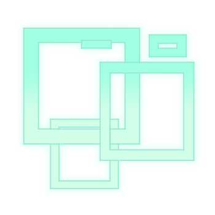
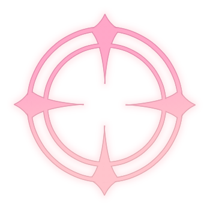
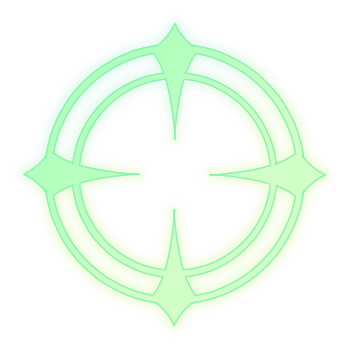
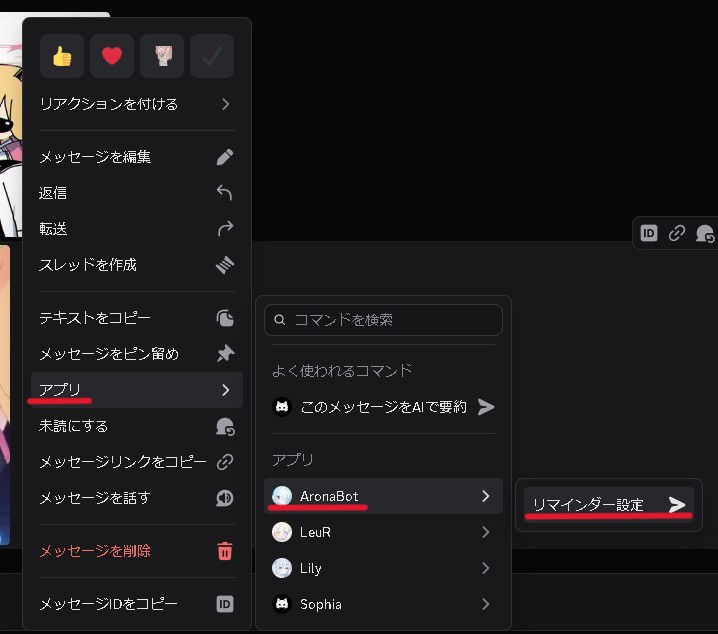
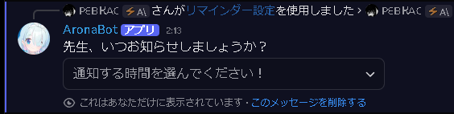
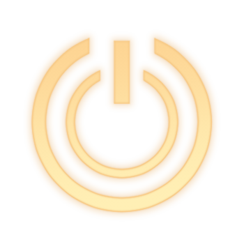

01
このAronaBotの機能
招待してすぐ使えるものと、設定してから届くものがあります。
主な機能
イベントの自動登録
公式の告知を拾って、Discord のイベントに予定を登録します。 総力戦・合同火力演習・キャンペーン・ピックアップ募集。 期間と告知画像つきで並ぶので、いつ始まっていつ終わるかが一目で分かります。
主な機能
公式 X の通知
公式アカウントの投稿を拾って、選んだチャンネルへ流します。 開催の知らせやメンテナンスの開始・延長・終了も、 告知を読み取ってそのつどお伝えします。
そのほかにできること
- 総力戦・大決戦を調べる攻略情報とボーダーを、選択式で。
/st - リマインダー忘れたくないメッセージを、時間が来たら引用して
- 4 時のまとめその日から始まるものを、毎朝お知らせ
- 10 連ガチャ提供割合どおりの確率で。
/g
すぐ使えるもの
スラッシュコマンドを打つだけです。設定は要りません。
/st
総力戦・大決戦を調べる
コンテンツとボスを選ぶと、攻略情報（推奨属性・地形・編成の考え方・ギミック）か ボーダー情報（プラチナ / ゴールド / シルバー）を出します。 開催中は定期的に数字を取り直します。


/g
10 連ガチャを引く
提供割合どおりの確率で回します。結果はチャンネル全体に出ます。
/h
できることの一覧を出す
迷ったらこれです。自分にだけ見えます。
設定すると届くもの
次の 5 つを、それぞれチャンネルを選んで受け取れます。既定はすべてオフです。
- 4 時のまとめ毎朝 4 時。その日から始まるイベントやメンテナンスに触れます
- 公式 X の更新通知公式アカウントの投稿を拾って流します
- 総力戦・イベントの開催通知総力戦・大決戦のほか、合同火力演習・キャンペーン・ピックアップ募集も、始まったときにお知らせします。総力戦だけは終了の前日にもう一度出て、そのときはボーダーの数字を添えます
- 開催予定のイベント登録告知を拾って Discord のイベントに予定を登録します。期間と告知画像つきで並びます
- メンテナンスの知らせ定期メンテナンスの開始・延長・終了。延長のときは新しい終了予定の時刻を出します
予定はサーバーの「イベント」に並びます
チャンネルへの投稿ではありません。サーバー名の下にある「イベント」に、 期間と告知画像つきで登録されます。開催通知に貼られるリンクからも飛べます。



02
つかいはじめる
お知らせを受け取るまで、3 つの手順です。
- 1
サーバーに招待する
上のボタンから追加します。追加しただけでは何も投稿しません。
- 2
/settingsを叩く項目ごとのカードが出ます。使えるのは「サーバー管理」の権限を持つ人だけです。
- 3
投稿先を選ぶ
メニューからチャンネルを選ぶと、その項目は自動でオンになります。 表示が🟢に変われば完了です。

/settings の画面「開催予定のイベント登録」をオンにすると、そのとき開催中のものもすぐ登録されます。 次の告知を待つ必要はありません。

03
メッセージから呼ぶもの
リマインダーだけは、コマンドではなくメッセージから呼びます。
リマインダー設定
スラッシュコマンドではありません。忘れたくないメッセージを 長押し（スマホ）／右クリック（PC）して、 「アプリ」→ AronaBot → リマインダー設定と進みます。
時間が来ると、そのメッセージを引用してお知らせします。 予約したあとに出る「リマインダー解除」ボタンで取り消せます。
{kind=link}

{kind=link}


04
よくある質問
つまずきやすいところを集めました。
招待したのに何も投稿されません
それで正常です。既定はすべてオフになっています。/settings で投稿先を選ぶと動き出します。
/settings が見当たりません
「サーバー管理」の権限を持っていない場合、コマンド自体が出ません。サーバーの管理者に頼んでください。
リマインダーのコマンドが出てきません
スラッシュコマンドではありません。対象のメッセージを長押し（スマホ）／右クリック（PC）して、「アプリ」の中から選びます。
「イベント登録」はどこに出ますか
サーバー名の下にある「イベント」です。チャンネルへの投稿ではないので、 投稿先に選んだチャンネルは「イベントの場所」として使われます。
登録されたイベントの日付がずれています
告知の文面から読み取っているので、書かれ方によっては外すことがあります。
/settings の「開催予定のイベント登録」からそのサーバーぶんだけ消せます。
消したものは作り直しません。
メンテナンスの知らせが二重に届きます
「公式 X の更新通知」と同じチャンネルにしていると、公式の投稿そのものと
アロナの知らせが並びます。/settings で別のチャンネルに分けてください。
ボーダーの数字が変わりません
開催期間外は前回の最終結果を出します。開催中は定期的に取り直していますが、元のデータが更新される間隔によります。
攻略情報が出るまで待たされます
その場で最新の情報を検索してからまとめているためです。同じボスの 2 回目は速くなります。
- 返事が見える範囲 —
/settingsと/hは自分にだけ見えます。ガチャや攻略情報はチャンネル全体に出ます - スレッドも投稿先に選べます — ただしアーカイブされると届かなくなります
- 拾えるのは公式 X に出た告知だけです — 公式が投稿していないものは分かりません
アロナをあなたのサーバーにも
サーバーに招待する追加しただけでは何も投稿しません。設定はあとから /settings で。